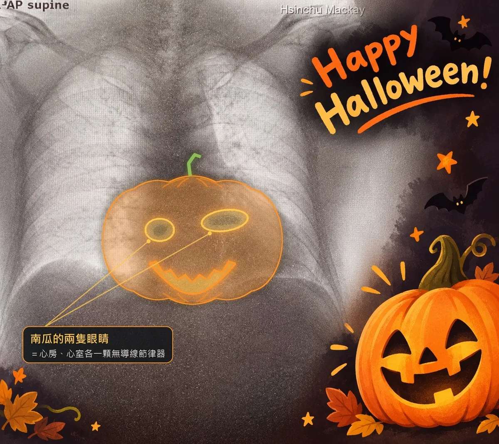

無導線心臟節律器，手照樣舉高高：萬聖節篇
粉專「一千個傷心的理由」貼文素材｜今天 10/31 發
兩張圖長按圖片存到相簿，照順序放


第 1 張：羊毛氈爺爺 第 2 張：南瓜 X 光
主文
#一千個傷心的理由
今天萬聖節 🎃
裝了心臟節律器，手還能舉高嗎？如果裝的是無導線心臟節律器（健保名稱叫「無導線心律調節器」），答案是可以。它從大腿根部的靜脈放進心臟，胸前沒有傷口，術後也不用限制手臂活動。
大家今天忙著戴面具、點南瓜燈，想著怎麼把朋友嚇一跳。可是門診裡有一群人，最怕的是被自己的心臟嚇到：走著走著心跳突然慢下來，眼前一黑，差點站不穩。
心跳慢到需要節律器，過去幾乎都是裝傳統節律器。做法是在胸前鎖骨下方開一道約 3 到 4 公分的傷口，在皮下做一個小口袋放電池，再經靜脈拉一條或兩條導線進心臟。它用了幾十年，救過很多人，只是裝完之後，生活會多一點小麻煩。術後一段時間，裝置那一側的手不能突然舉高過肩、不能提重物，也不能打球甩肩，多久要依醫院指示；胸口還摸得到一顆突起，背包肩帶和安全帶剛好壓在上面，就是不舒服。
無導線節律器換了一個做法，整顆差不多一顆膠囊大小。醫師從大腿根部的靜脈放入導管，把它送進心臟，直接固定在心臟內壁上。第二張 X 光裡，心房和心室各放了一顆，兩顆合在一起，剛好是南瓜燈的一對眼睛 👀
換成日常生活，差別很具體。胸口平平的，穿低領衣服、背包包、繫安全帶都不會壓到什麼。沒有導線，就沒有導線斷裂、磨損的問題；沒有皮下口袋，也就沒有口袋感染。傷口在大腿根部的穿刺處，掛萬聖節彩帶時手舉高也沒關係，穿刺那一側的腿，術後依醫院指示休息就好。
不過有三件事，我一定要先講清楚。第一，它和傳統節律器一樣，都是經血管進到心臟的手術，心臟穿孔、出血這類風險兩種都有，無導線也有自己的風險，例如裝置位置不穩。第二，要選對類型，心跳慢的原因不同，需要刺激的心腔就不同，現在無導線有心房型、心室型和雙腔系統。第三，健保目前是有條件給付，要符合特定的心律問題，而且是傳統節律器裝不了的情況，經事前審查才可能核准，不符合條件就需要自費。條件的細節我放在第一則留言。
所以門診時，我會先把您的心電圖攤開，畫給您看是哪裡慢了，再一起決定哪一種最適合您。
萬聖節要嚇人，交給南瓜燈和面具就好；心跳這件事，穩穩的就好。
家裡長輩裝的是哪一種節律器？裝完以後，生活上最不方便的是什麼？歡迎留言跟我說。每個人的狀況不同，貼文不能取代門診評估。
第一則留言
健保給付條件補充：依健保署特殊材料給付規定，無導線心律調節器要同時符合三個條件才給付。第一，有特定的心律問題造成心跳過慢。第二，沒有適當的血管通路，裝不了傳統節律器，例如兩側鎖骨下靜脈阻塞、上腔靜脈阻塞、手上有洗腎用的動靜脈廔管或洗腎導管，或是身上有化療人工血管。第三，先完成個案登錄、送事前審查，核准後才給付。條件以健保署最新公告為準，自己能不能申請，請和醫院確認。
我的門診在新竹馬偕紀念醫院心臟內科，週二下午、週三上午、週四上午和週四夜診，以醫院掛號頁公告為準。
網路掛號：https://www.hc.mmh.org.tw/register_single_doctor.php?depid=14&drcode=5940
發文後馬上用粉專身分留言，不要用個人帳號。